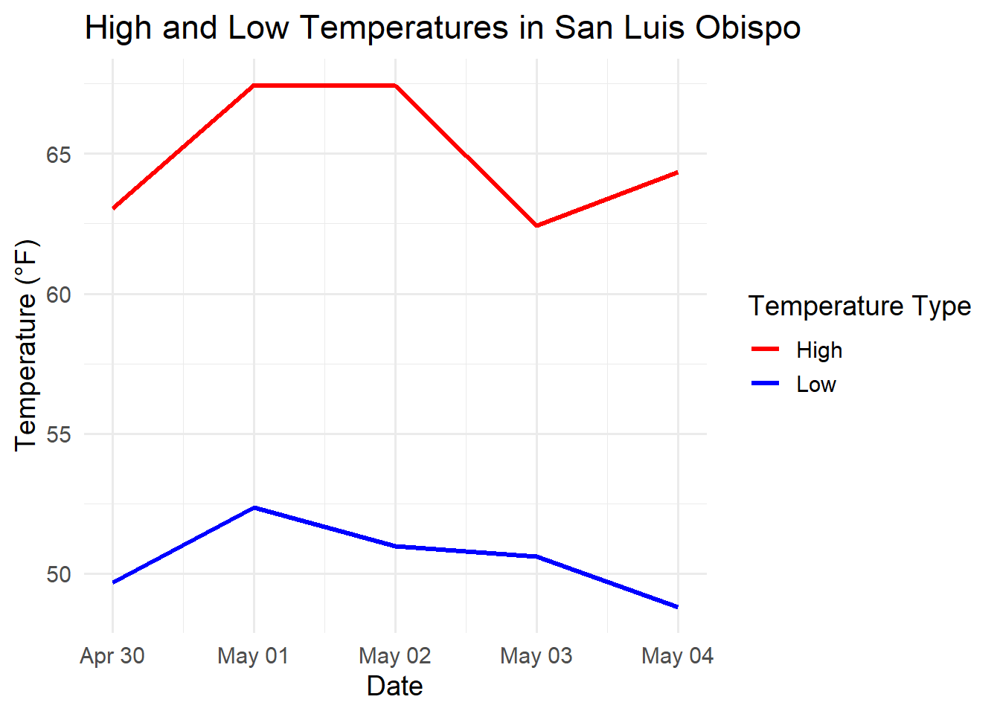

Step 1b: Use GET to call the API and assign it to a variable geo_response. Use logic (if) to proceed if the status code is 200, and use fromJSON package jsonlite to get content from our API an use ‘flatten = TRUE’ to unnest the data.
geo_response <-GET(geo_url)if (status_code(geo_response) ==200) { geo_data <-fromJSON(content(geo_response, as ="text", encoding ="UTF-8"), flatten =TRUE)# Step 1c: Assess if the output has 0 length, meaning no result. If so, stop and display an error message. if (length(geo_data) ==0) {stop("City not found. Please check the city name.") }# Step 1d: Assign latitude and longitude to variables, and use round() to clip it down to 2 decimal places. lat <-round(geo_data$lat, digits =2) lon <-round(geo_data$lon, digits =2)# Optional: Print a string displaying the city name and latitude / longitude. cat("Coordinates for", city_name, "-> Latitude:", lat, "Longitude:", lon, "\n")# Step 2: Use the One Call API to get the past 5 days of weather data # Step 2a: Define the date range (modify this as needed) date_range <-as.character(lubridate::today() -days(1:5)) # past 5 days# Step 2b: Initialize data frame to hold the outputs. "p5weather" for past 5 weather. p5weather <-data.frame()# Step 2c: Loop over dates and make an API call for each day. For every date in the date vector, supply latitude, longitude, the different date, API key, and provide unit preference.for (date in date_range) { weather_url <-paste0("https://api.openweathermap.org/data/3.0/onecall/day_summary?","lat=", lat,"&lon=", lon,"&date=", date,"&appid=", api_key,"&units=imperial" )# Step 2d: Make the API call using the different weather_url queries for each date. Store these in weather_response weather_response <-GET(weather_url)# Step 2e: Use logic to evaluate the response and use fromJSON() to get the content from the JSON output and use "flatten = TRUE" to unnest the data.if (status_code(weather_response) ==200) { weather_parsed <- jsonlite::fromJSON(content(weather_response, as ="text", encoding ="UTF-8"), flatten =TRUE)# Step 2f: Use the output for each day and assign it into a data frame. daily_df <-as.data.frame(weather_parsed)# Step 2g: Add date and city name columns daily_df$city <- city_name daily_df$date <- date# Step 2h: Use rbind() to add all the rows to the p5weather data frame. p5weather <-rbind(p5weather, daily_df) } else {# Step 2i: Use logic (else) to print an error message for when weather data is not obtained.warning(paste("Failed to get weather for", date, "-", status_code(weather_response))) } }print(p5weather)} else {stop("Geocoding failed. Check your API key or city name.")}
Coordinates for San Luis Obispo -> Latitude: 35.28 Longitude: -120.66
lat lon tz date units afternoon afternoon.1 total
1 35.28 -120.66 -07:00 2025-05-04 imperial 0 65 0
2 35.28 -120.66 -07:00 2025-05-03 imperial 0 71 0
3 35.28 -120.66 -07:00 2025-05-02 imperial 0 71 0
4 35.28 -120.66 -07:00 2025-05-01 imperial 15 76 0
5 35.28 -120.66 -07:00 2025-04-30 imperial 100 75 0
temperature.min temperature.max temperature.afternoon temperature.night
1 48.81 64.35 61.00 49.78
2 50.61 62.42 61.84 52.77
3 50.97 67.42 63.79 52.68
4 52.36 67.46 67.46 53.11
5 49.69 63.05 58.42 51.73
temperature.evening temperature.morning afternoon.2 wind.max.speed
1 58.12 49.01 1008 20.71
2 57.96 52.92 1014 21.85
3 61.48 51.15 1015 18.41
4 57.65 52.45 1014 11.50
5 57.47 49.69 1015 9.22
wind.max.direction city
1 310 San Luis Obispo
2 310 San Luis Obispo
3 310 San Luis Obispo
4 310 San Luis Obispo
5 210 San Luis Obispo
Create a Visualization for the High and Low temperatures
Warning: Using `size` aesthetic for lines was deprecated in ggplot2 3.4.0.
ℹ Please use `linewidth` instead.

JSON Key
R Type
Notes
temperature.min
numeric
Minimum temp for the day
temperature.max
numeric
Maximum temp for the day
humidity.morning
integer
Morning humidity %
wind.max
numeric
Peak wind speed
precipitation.total
numeric
Rain/snow total (mm or in)
date (added)
Date
From loop date
city (added)
character
City name from geocoding
The API returns a JSON object representing summary statistics for a specific location and date. The root of the JSON is a named list (in R, this becomes a named list or a single-row data.frame after fromJSON()).
temperature → Nested List → Becomes nested data.frame or named columns